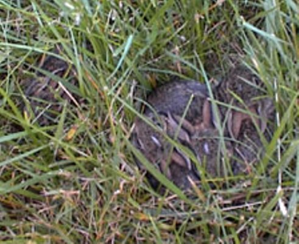
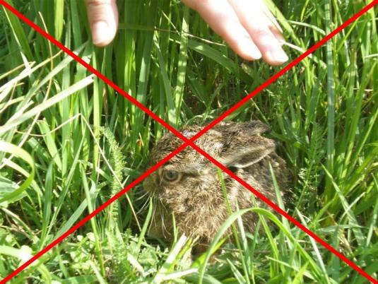

Dobro došli na web stranice Divlji Zec !
Ova stranica namijenjena je svim ljubiteljima životinja, kako bi naučili nešto više i pomogli u očuvanju ove divne, zaštićene vrste.
Prije svega, ne možemo dovoljno naglasiti koliko je važno da mladunčad divljih zečeva u prirodi ne dirate. Iako izgledaju kao da su napušteni nasred livade, njihova majka je uvijek u blizini i vratit će se.
Ako ste bebe dirali, ne vraćajte ih, jer će njihova majka osjetiti vaš miris i više ih neće prihvatiti. U tom slučaju zečiće vi morate othraniti na zamjenskom mlijeku za mačiće, kako piše na ovoj stranici. Na žalost, čak i neki veterinari će vam pogrešno savjetovati da malu bebu zeca hranite travom ili sjemenkama. Iako bebe zeca već vide, imaju krzno i zubiće, takva ishrana će sigurno završiti uginućem, jer su do određene dobi posve ovisni o mlijeku svoje majke.
Zamjensko mlijeko za mačiće je najsličnije zečjem mlijeku i stoga se koristi u othranjivanju beba zečića. Kravlje/kozje/ovčje mlijeko nije dovoljno hranjivo i sadrži previše laktoze. Oni zečići koji uspiju preživjeti na takvom mlijeku, budu slabo razvijeni i skloni lomovima kostiju, što ima ozbiljne posljedice.
|  |  |
{kind=link}
{kind=link}
Proljeće i ljeto su sezona beba zečića i zaprimamo na desetke prijava mjesečno i stotine e-mailova s upitima za pomoć ili savjet. Odgovaramo čim uzmognemo i molimo da nam šaljete upite samo kada je zečić ranjen ili bolestan, te u vezi pitanja za koje još nema odgovora na našim stranicama, što možete provjeriti pomoću tražilice. Tako ćemo stići odgovoriti teško bolesnim i ranjenim zečićima kojima je to najpotrebnije. Nadamo se da će vam detaljni savjeti na našim stranicama pomoći, kao mnogima do sada. Savjetima se već služilo nekoliko stotina nalaznika divljih zečeva, a neke primjere možete vidjeti ovdje. Zečići su pronađeni u raznim okolnostima, a neki od njih su bili i ozlijeđeni. Uz našu pomoć, mnogi su uspješno izliječeni, othranjeni i zatim vraćeni u prirodu, gdje i pripadaju.
Osim pomoći u othranjivanju zečića, zadatak ove stranice je i educirati ljude, kako zečiće ne bi dirali. U Hrvatskoj se svake godine nenamjerno uznemiri na stotine beba divljih zečeva, a većina ih zbog toga ugiba. Cilj nam je spriječiti da do toga dođe, a u tome i vi možete pomoći. Zapamtite - ni jedno mlijeko nije kao mlijeko majke zečice. Najveće šanse da zeko preživi su, kao i svakoj bebi, uz njegovu majku.
Moramo napomenuti da ljudi često poistovjećuju kunića i zeca, iako su to dvije potpuno različite životinje. Zec je divlja životinja, sretna isključivo na slobodi i stoga joj to moramo omogućiti - baš kao što bismo to željeli vuku, risu ili lastavici. Zadržite li divljeg zeca u kući/stanu, to će vjerojatno završiti tragično. Naime, nakon određene dobi zečevi su skloni samoozlijeđivanju. Divljanjem po kući mogu slomiti jednu ili više nogu, pa čak i kralježnicu. Stoga vas molimo, ukoliko želite kućnog ljubimca, udomite kunića - ne zeca. Uostalom, zadržavanje divlje životnije u zatočeništvu je Zakonom zabranjeno.
S druge strane, kunić je pitoma životinja, koja se u prirodi neće snaći. Ostavite li ga u šumi ili na nekoj livadi, osudili ste ga na smrt - bilo od gladi, bilo od njegovih prirodnih neprijatelja. Zato vas molimo, ako se više ne možete skrbiti o svom kuniću (pitomom ljubimcu), nemojte ga napuštati u prirodi. Javite se Udruzi Mrkvica, koja će vam pomoći da mu nađete novi dom.